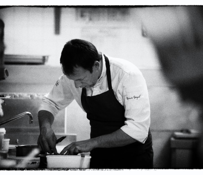
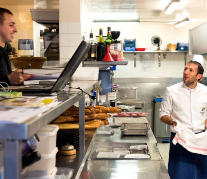

Bienvenue
LA FERME DE VOISINS
l'art culinaire au service de la gourmandise
ROMAIN GICQUEL — CHEF DU RESTAURANT LA FERME DE VOISINS

Secrétaire Général Adjoint du Comité exécutif des Maitres Cuisiniers de France de 2015 à 2019 Né le 10 mars 1982, Suresnes (Hauts de Seine)
Son histoire :
Passionné de cuisine, chef et patron du restaurant gastronomique La Ferme de Voisins à quelques kilomètres de Versailles depuis ces 24 ans. Romain Gicquel est en cuisine dès l'âge de 15 ans, à l'ouvrage pendant les repas de famille depuis sa plus tendre enfance. Il décida de s'engager sur le chemin des études auprès d'une école de qualité pour être sûr de toucher et de travailler des produits d'excellence, l'école TECOMAH fût toute requise et sa fidélité restera sans faille, puisqu'il participe avec assiduité aujourd'hui encore aux différents jurys d'examen du groupe FERRANDI-PARIS.
Son premier apprentissage, le conduisit au cœur de Versailles sur la place du
marché
même où il
put
se voir confier très rapidement la charge des achats de produits frais au petit matin,
la
qualité et
le choix des produits est pour Romain Gicquel un élément essentiel pour le rendu optimum
de
la
cuisine française.Jeune apprenti et pourtant très rapidement en confiance et responsabilité par
son
chef de
cuisine, il
poursuivra sa formation au Club de Direction chez Cartier comme chef de partie durant 4
ans.Motivé par ses amis et collègues de classe il décidera d'ajouter un CAP
Pâtisserie,
glacier,
chocolatier et confiseur en complément de ses autres diplômes professionnels, CAP
Pâtissier
qu'il
effectuera en un an. Le chef du Club de direction Cartier, Jérôme Gueguen, lui proposera
de
travailler chez LADUREE le temps de l'ouverture du Retiro, nouveau site rassemblant
l'ensemble
des
restaurants du groupe, comme saucier.
 C'est tout naturellement que son ancien chef et patron de La Ferme de Voisins le contactera pour reprendre son établissement et qu'il deviendra à son tour chef et patron à l'âge de 24 ans. Aujourd'hui sa passion le porte au-delà de son établissement et avec une ferveur sans faille à développer avec ses pairs la plus grandeassociation française des chefs de cuisine l'Association des Maîtres Cuisiniers de France dont il est depuis 2 ans membre du Comité exécutif en charge dans un premier temps du Concours du Meilleur Apprenti Cuisinier de France.À ce jour garant du rayonnement de l'art culinaire français à travers le monde, Romain Gicquel travaille en étroite collaboration avec le Président Christian TETEDOIE pour l'alliance des générations de cuisiniers et le développement de leurs images à l'international. Décoré en 2019 de la Médaille de Vermeil de Paris.
Son restaurant à Voisins le Bretonneux :
-

- La Ferme de Voisins, restaurant gastronomique
- Dernières prestations / démonstration en date sur 2017/18 :
- Marakech Hôtel Ksar Char Bagh, 3 ans sur la transmission
- Mexico Ecole & Aspic : master class pour jeunes chefs en Hôtel & Prospects
- Dinard : 3 ans de recrutement d'un Jeune Meilleur Apprenti de France
- Japon, Prince Hôtel Hôtel, Tokyo, Kyoto et Tenri en appui sur nos produits et recettes de "La Ferme de Voisins" à jeunes chefs Japonais
- Plus de 15 interventions sur des salons en France
Infos Pratiques
Services
Parking, Climatisé, Accès handicapés, Terrasse, Wifi, Privatisation, Plats à emporter, Animaux acceptés
Moyens de paiement
Espèces, Eurocard/Mastercard, Chèques, Carte Visa, Carte Bleue, Carte American Express, Chèques Vacances ANCV
A proximité
Golf National, Bois de Chevreuse, Bois de Satory, Golf Régional d'Ile-de-France, Golf Saint-Marc